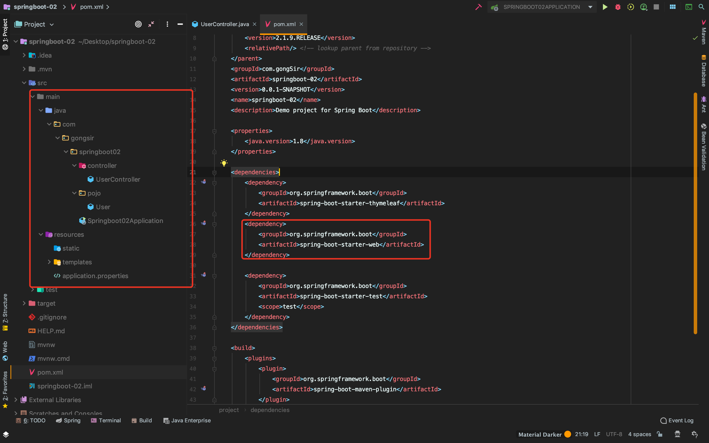
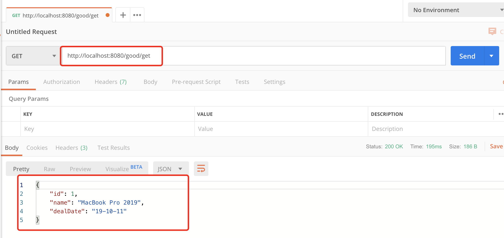
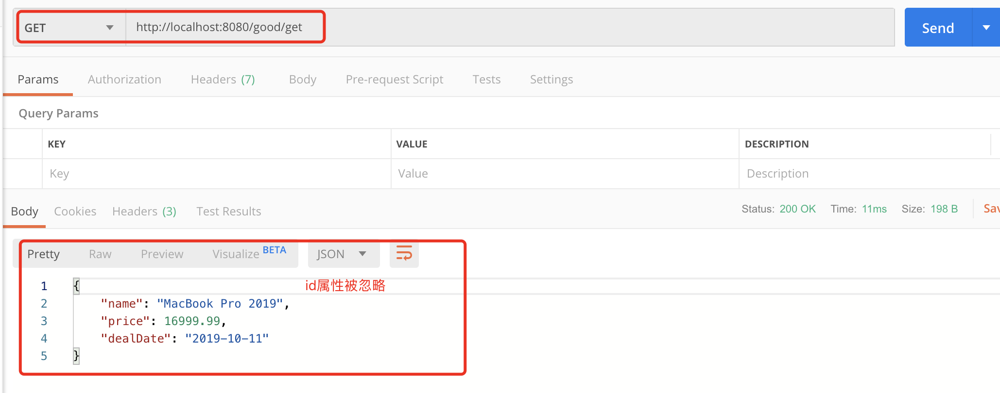
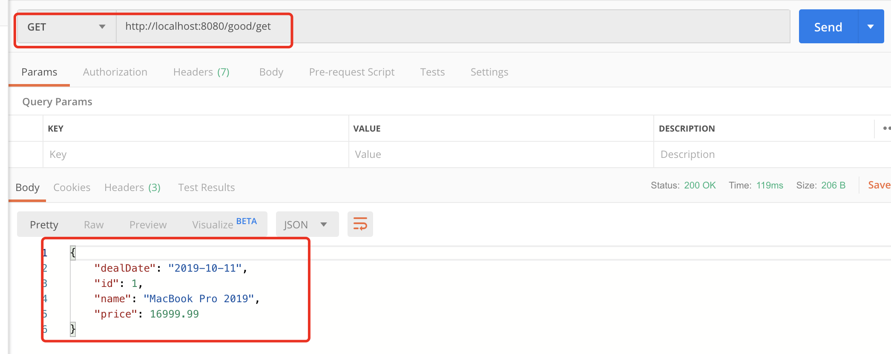

目录
随着web开发前后端分离技术的盛行，json是目前主流的前后端数据交互方式，使用json数据进行交互需要对json数据进行转换解析，需要用到一些json处理器，常用的json处理器有：
下面分别介绍如何在SpringBoot中整合三大json解析框架。
Jackson-databind是SpringBoot默认集成在web依赖中的框架，因此我们只需要引入spring-boot-starter-web依赖，就可以返回json数据：
接着上篇文章中的demo继续修改demo，先看下代码框架：

下面开始修改demo，返回json数据，首先在pojo下创建一个Good实体类，并且可以通过注解来解决日期格式等需求：
package com.gongsir.springboot02.pojo;
import com.fasterxml.jackson.annotation.JsonFormat;
import com.fasterxml.jackson.annotation.JsonIgnore;
import java.util.Date;
public class Good {
private Integer id;
private String name;
@JsonIgnore
private Double price;
@JsonFormat(pattern = "yy-MM-dd")
private Date dealDate;
public Integer getId() {
return id;
}
public void setId(Integer id) {
this.id = id;
}
public String getName() {
return name;
}
public void setName(String name) {
this.name = name;
}
public Double getPrice() {
return price;
}
public void setPrice(Double price) {
this.price = price;
}
public Date getDealDate() {
return dealDate;
}
public void setDealDate(Date dealDate) {
this.dealDate = dealDate;
}
}然后在controller包下创建一个GoodController，在方法上加上@ResponseBody注解（也可以直接使用@RestController注解整个类）即可返回json信息：
@Controller
@RequestMapping(value = "/good")
public class GoodController {
@GetMapping(path = "/get")
@ResponseBody
public Good getGood(){
Good good = new Good();
good.setId(1);
good.setName("MacBook Pro 2019");
good.setPrice(16999.99);
good.setDealDate(new Date());
return good;
}
}此时可以使用浏览器或者postman工具来查看结果,运行项目，调用http://localhost:8080/good/get接口：

使用Gson需要将SpringBoot默认依赖的jackson-databind除去，然后引入Gson：
<dependency>
<groupId>org.springframework.boot</groupId>
<artifactId>spring-boot-starter-web</artifactId>
<!--除去jackson-databind依赖-->
<exclusions>
<exclusion>
<groupId>com.fasterxml.jackson.core</groupId>
<artifactId>jackson-databind</artifactId>
</exclusion>
</exclusions>
</dependency>
<!--引入Gson依赖-->
<dependency>
<groupId>com.google.code.gson</groupId>
<artifactId>gson</artifactId>
</dependency>创建一个gson配置：
package com.gongsir.springboot02.configuration;
import com.google.gson.Gson;
import com.google.gson.GsonBuilder;
import org.springframework.context.annotation.Bean;
import org.springframework.context.annotation.Configuration;
import org.springframework.http.converter.json.GsonHttpMessageConverter;
import java.lang.reflect.Modifier;
@Configuration
public class GsonConfig {
@Bean
GsonHttpMessageConverter gsonHttpMessageConverter(){
GsonHttpMessageConverter gsonHttpMessageConverter = new GsonHttpMessageConverter();
GsonBuilder builder = new GsonBuilder();
//设置解析的日期格式
builder.setDateFormat("yyyy-MM-dd");
//设置忽略字段，忽略修饰符为protected的字段属性
builder.excludeFieldsWithModifiers(Modifier.PROTECTED);
Gson gson = builder.create();
gsonHttpMessageConverter.setGson(gson);
return gsonHttpMessageConverter;
}
}修改Good,java:
package com.gongsir.springboot02.pojo;
import java.util.Date;
public class Good {
protected Integer id;
private String name;
private Double price;
private Date dealDate;
public Integer getId() {
return id;
}
public void setId(Integer id) {
this.id = id;
}
public String getName() {
return name;
}
public void setName(String name) {
this.name = name;
}
public Double getPrice() {
return price;
}
public void setPrice(Double price) {
this.price = price;
}
public Date getDealDate() {
return dealDate;
}
public void setDealDate(Date dealDate) {
this.dealDate = dealDate;
}
}启动项目，再次访问http://localhost:8080/good/get接口：

引入fastjson依赖，修改刚刚的pom.xml:
<dependency>
<groupId>org.springframework.boot</groupId>
<artifactId>spring-boot-starter-web</artifactId>
<!--除去jackson-databind依赖-->
<exclusions>
<exclusion>
<groupId>com.fasterxml.jackson.core</groupId>
<artifactId>jackson-databind</artifactId>
</exclusion>
</exclusions>
</dependency>
<!--引入fastjson依赖-->
<dependency>
<groupId>com.alibaba</groupId>
<artifactId>fastjson</artifactId>
<version>1.2.47</version>
</dependency>配置fastjson有两种方法，方法一：自定义MyFastjsonConfig，提供FastJsonHttpMessageConverter Bean：
package com.gongsir.springboot02.configuration;
import com.alibaba.fastjson.serializer.SerializerFeature;
import com.alibaba.fastjson.support.config.FastJsonConfig;
import com.alibaba.fastjson.support.spring.FastJsonHttpMessageConverter;
import org.springframework.context.annotation.Bean;
import org.springframework.context.annotation.Configuration;
import org.springframework.http.MediaType;
import java.nio.charset.Charset;
import java.util.ArrayList;
import java.util.List;
@Configuration
public class MyFastjsonConfig {
@Bean
FastJsonHttpMessageConverter fastJsonHttpMessageConverter(){
FastJsonHttpMessageConverter converter = new FastJsonHttpMessageConverter();
FastJsonConfig config = new FastJsonConfig();
//升级之后的fastjson（1.2.28之后的版本）需要手动配置MediaType，否则会报错
List<MediaType> supportedMediaTypes = new ArrayList<>();
supportedMediaTypes.add(MediaType.APPLICATION_JSON);
supportedMediaTypes.add(MediaType.APPLICATION_JSON_UTF8);
supportedMediaTypes.add(MediaType.APPLICATION_ATOM_XML);
supportedMediaTypes.add(MediaType.APPLICATION_FORM_URLENCODED);
supportedMediaTypes.add(MediaType.APPLICATION_OCTET_STREAM);
supportedMediaTypes.add(MediaType.APPLICATION_PDF);
supportedMediaTypes.add(MediaType.APPLICATION_RSS_XML);
supportedMediaTypes.add(MediaType.APPLICATION_XHTML_XML);
supportedMediaTypes.add(MediaType.APPLICATION_XML);
supportedMediaTypes.add(MediaType.IMAGE_GIF);
supportedMediaTypes.add(MediaType.IMAGE_JPEG);
supportedMediaTypes.add(MediaType.IMAGE_PNG);
supportedMediaTypes.add(MediaType.TEXT_EVENT_STREAM);
supportedMediaTypes.add(MediaType.TEXT_HTML);
supportedMediaTypes.add(MediaType.TEXT_MARKDOWN);
supportedMediaTypes.add(MediaType.TEXT_PLAIN);
supportedMediaTypes.add(MediaType.TEXT_XML);
converter.setSupportedMediaTypes(supportedMediaTypes);
config.setDateFormat("yyyy-MM-dd");
config.setCharset(Charset.forName("UTF-8"));
config.setSerializerFeatures(
//json格式化
SerializerFeature.PrettyFormat,
//输出value为null的数据
SerializerFeature.WriteMapNullValue
);
converter.setFastJsonConfig(config);
return converter;
}
}方法二：实现WebMvcConfigurer接口,重写configureMessageConverters方法：
package com.gongsir.springboot02.configuration;
import com.alibaba.fastjson.serializer.SerializerFeature;
import com.alibaba.fastjson.support.spring.FastJsonHttpMessageConverter;
import org.springframework.context.annotation.Configuration;
import org.springframework.http.MediaType;
import org.springframework.http.converter.HttpMessageConverter;
import org.springframework.web.servlet.config.annotation.WebMvcConfigurer;
import java.nio.charset.Charset;
import java.util.ArrayList;
import java.util.List;
@Configuration
public class FastJsonConfig implements WebMvcConfigurer {
@Override
public void configureMessageConverters(List<HttpMessageConverter<?>> converters) {
FastJsonHttpMessageConverter converter = new FastJsonHttpMessageConverter();
com.alibaba.fastjson.support.config.FastJsonConfig config = new com.alibaba.fastjson.support.config.FastJsonConfig();
//升级之后的fastjson（1.2.28之后的版本）需要手动配置MediaType，否则会报错
List<MediaType> supportedMediaTypes = new ArrayList<>();
supportedMediaTypes.add(MediaType.APPLICATION_JSON);
supportedMediaTypes.add(MediaType.APPLICATION_JSON_UTF8);
supportedMediaTypes.add(MediaType.APPLICATION_ATOM_XML);
supportedMediaTypes.add(MediaType.APPLICATION_FORM_URLENCODED);
supportedMediaTypes.add(MediaType.APPLICATION_OCTET_STREAM);
supportedMediaTypes.add(MediaType.APPLICATION_PDF);
supportedMediaTypes.add(MediaType.APPLICATION_RSS_XML);
supportedMediaTypes.add(MediaType.APPLICATION_XHTML_XML);
supportedMediaTypes.add(MediaType.APPLICATION_XML);
supportedMediaTypes.add(MediaType.IMAGE_GIF);
supportedMediaTypes.add(MediaType.IMAGE_JPEG);
supportedMediaTypes.add(MediaType.IMAGE_PNG);
supportedMediaTypes.add(MediaType.TEXT_EVENT_STREAM);
supportedMediaTypes.add(MediaType.TEXT_HTML);
supportedMediaTypes.add(MediaType.TEXT_MARKDOWN);
supportedMediaTypes.add(MediaType.TEXT_PLAIN);
supportedMediaTypes.add(MediaType.TEXT_XML);
converter.setSupportedMediaTypes(supportedMediaTypes);
config.setDateFormat("yyyy-MM-dd");
config.setCharset(Charset.forName("UTF-8"));
config.setSerializerFeatures(
//json格式化
SerializerFeature.PrettyFormat,
//输出value为null的数据
SerializerFeature.WriteMapNullValue
);
converter.setFastJsonConfig(config);
//将converter加入到converters
converters.add(converter);
}
}启动项目，再次调用接口：
